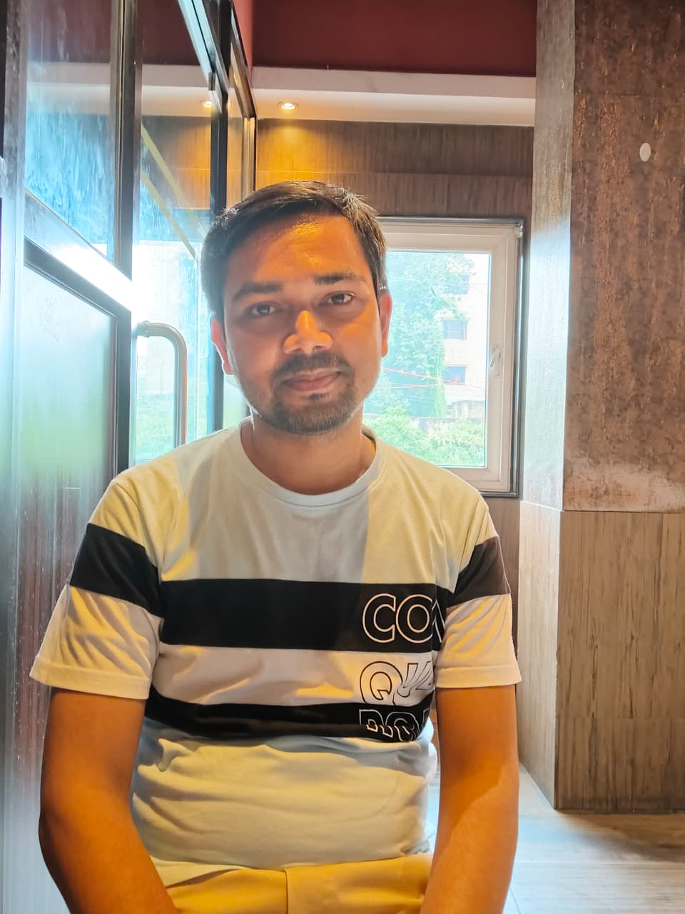
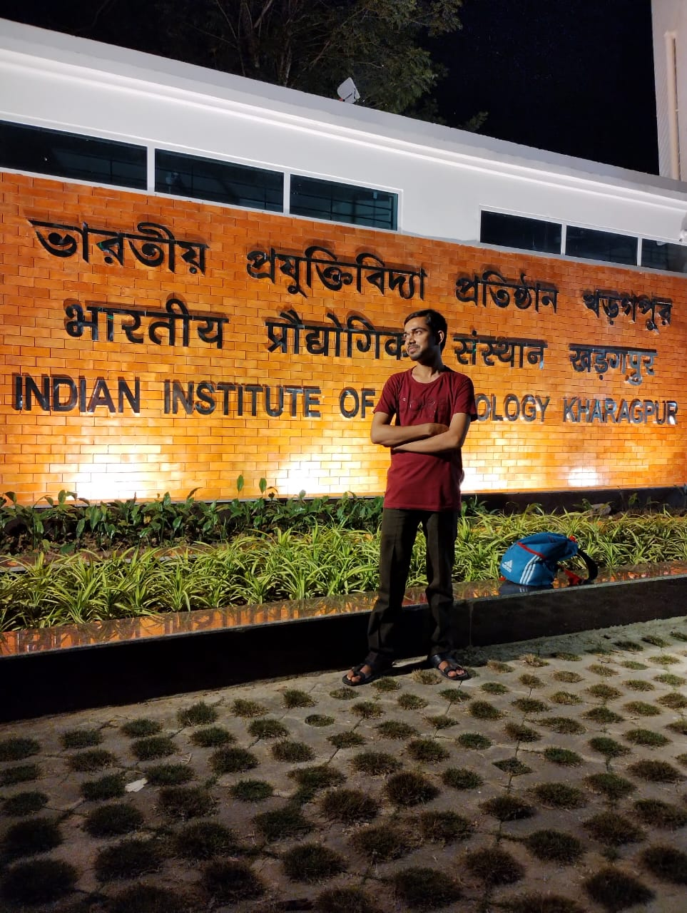
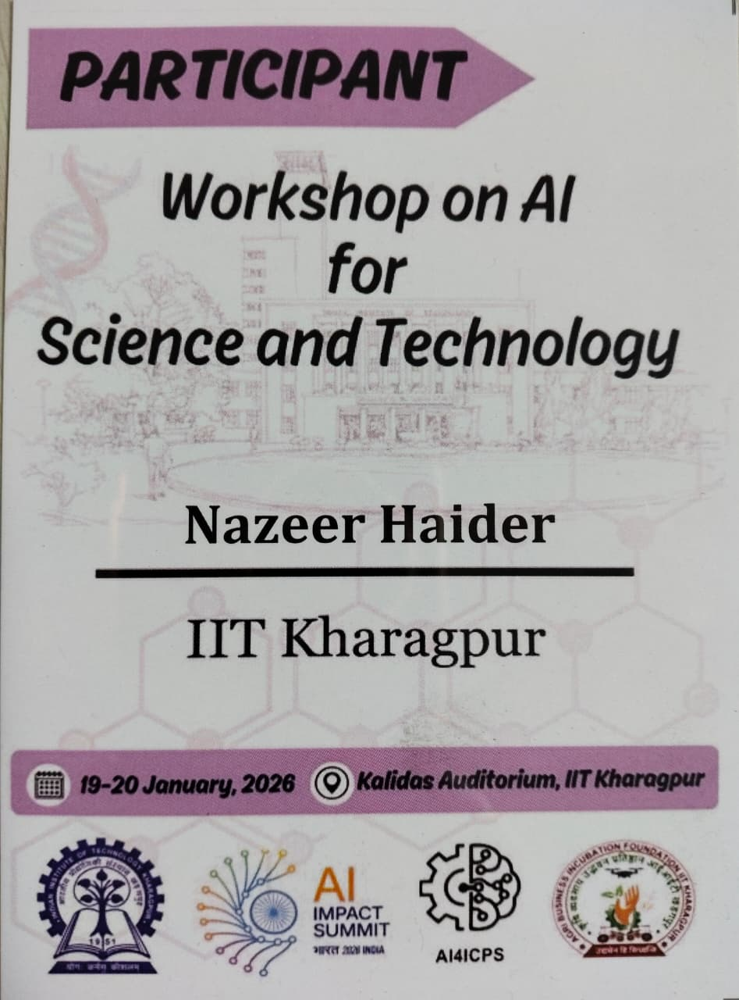

Hello, I'm
Ph.D. Research Scholar (UGC NET Fellow) at the Centre for Computational and Data Sciences (CCDS), Indian Institute of Technology (IIT) Kharagpur. My Ph.D. thesis focuses on Agricultural Imaging and Sericulture. My broad research interests also include privacy-preserving AI frameworks, Federated Learning, and Medical Imaging.
I am Nazeer Haider, a PhD research scholar (UGC NET fellow) at the Centre for Computational and Data Sciences (CCDS), Indian Institute of Technology (IIT) Kharagpur under the Ministry of Education (MoE), Government of India.
My research endeavors are primarily focused on agricultural imaging, particularly sericulture imaging, and on developing privacy-preserving and explainable AI frameworks for medical imaging, particularly for early-stage cervical cancer detection. My academic interests span artificial intelligence, machine learning, deep learning, computer vision, and federated learning.
I believe that if anything can change the world for the better, it is education and innovation driven by responsible AI.

Neural architecture design, convolutional networks, and advanced deep learning methodologies for real-world applications.
Object detection, image classification, and visual recognition systems using state-of-the-art architectures including YOLO variants.
AI-powered plant disease detection and classification for mulberry leaves, silkworm cocoon grading, and precision agriculture using deep learning and LLM-based management systems.
AI-driven diagnostic tools for early-stage cervical cancer detection using cervigram images with explainable predictions.
Privacy-preserving distributed machine learning frameworks for collaborative model training without sharing raw data.
Developing interpretable and transparent AI models that provide clinician-understandable explanations for medical decisions.
5 Journal Papers · 1 Conference Paper · 1 Book Chapter · 2 Under Review
Implementing and evaluating diverse YOLO models for highly accurate skin cancer detection and analysis across diverse dermatology images (DDI dataset).
A Lightweight Personalized Federated Cyber-Physical Framework for Explainable and Knowledge-Guided Cervical Precancer Detection.
Gated Multimodal Learning for Cocoon Gender Classification — A Low Cost and Non-destructive computer vision approach.
A Collaborative, Explainable, and Privacy-Preserving Federated Intelligence Framework for Early Cervical Precancer Detection in Distributed Healthcare Systems.
Automated Silkworm Counting Using YOLOv11-CGLU and CNN-based Density Estimation for feed planning and health monitoring.
Research-driven object detection system exploring fine-tuning and sliced inference techniques for improving small-object detection accuracy.
Automated attendance tracking system using facial recognition with real-time detection and identification capabilities.
A travel experience sharing web application with interactive map integration using Google Maps API for location-based storytelling.
A full-featured online news delivery platform with content management, categorization, and responsive reading interface.

Memories and experiences from my academic journey across various premier institutions.
A collection of beautiful moments captured while exploring diverse landscapes across India.

Professional highlights from organizing hackathons, attending conferences, and engaging with peers.
Get In Touch
Although I'm focused on my research at IIT Kharagpur, my inbox is always open. Whether you have a question about my research, potential collaborations, or just want to say hi, I'll try my best to get back to you!
Say Hello